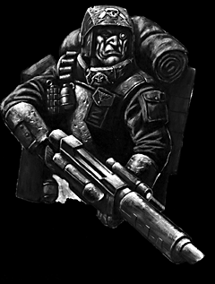

Imperial Forces |
Force Disposition Introduction |
Ork Forces |
|

The eighteen companies of Storm Troopers assigned to the land war of Armageddon have already proved their capabilities in a series of covert strikes against numerous warbands. Upon landing on Armageddon, each company was broken apart, following standard Imperial doctrine in their use. Many individual squads have been assigned to other Imperial Guard regiments to aid in standard battlefield actions, whereas others have been deployed amongst the Hive defence forces, where their skills at counter-infiltration have proved devastating to marauding squads of Ork Kommandos seeking to gain entry to the Hives as battle rages outside.
The greatest concentration of Storm Troopers on Armageddon can be found within Helsreach Hive. A full seven companies have been stationed there, charged with the near impossible task of supporting the forces already present in driving the Orks from the positions they managed to secure so quickly. The huge docks and shipyards have been completely overrun by the Orks, as have the outer fortifications surrounding Helsreach but the Hive itself remains in the tenuous grasp of the Imperium.
|
| ||||||||||||||||||||||||||||||||||||||||||||||||||
|
The Storm Trooper companies deployed in Helsreach have had to face murderous Ork assaults that are often mounted within hours of each other and the elite soldiers have quickly gained the admiration and respect of the militia they fight alongside. Though not suited to a defensive role, the aggressive tactics of the Storm Troopers has checked the Ork advance through Helsreach and operations to disrupt Ork reinforcements and retake the Ironside Shipyards have begun. Despite heroic efforts though, the Storm Troopers of Helsreach will need the reinforcements they have so desperately signalled for before any significant gains can be made. A last ditch effort is being made to deploy a newly developed neurotoxin which may prove lethal to the Ork species, but if this fails to halt their armies, nothing short of a miracle may save Helsreach. The majority of Storm Trooper companies, however, have been deployed in a similar manner to most of the Space Marine Chapters, dispersing into the trackless ash wastes and wild lands of Armageddon. From here they conduct an almost hidden war, far from the front lines where the Orks besiege the Hives and Imperial outposts. Taking advantage of their dispersed deployment, these units of Storm Troopers constantly seek opportunities to ambush Ork warbands travelling between war zones and thus hinder the supply of enemy reinforcements to the front line. One of the most audacious raids in the initial stages of the Third Armageddon War was performed by the 17th Spear Points, a renowned company that began their battle within hours of leaving their shuttles at Infernus Hive. Under the cover of Armageddon's long night, they launched a lightning assault on Warlord Thugsnik's Big Gunz as the warbands moved into position mere miles away from Infernus. Targeting the massive ammunition dumps that Thugsnik had ordered constructed, the Spear Points infiltrated the enemy camp with several squads given the task of laying explosive charges at key areas. When these explosives detonated the ammunition dumps, the colossal shock wave was felt within Infernus itself. Thousands of Orks were killed in the initial blast, which was quickly followed by a full blown assault, launched by the Spear Points' mobile forces, combining the advance of their squads and Nightstalker Sentinels with heavy support from their hidden Griffon mortar positions. The confusion within the Ork ranks was complete and the Storm Troopers managed to devastate Thugsnik's forces before Ork reinforcements forced them to withdraw. The Warlord had lost fully half of his forces in this single action. As well as destroying a large portion of the siege guns that threatened Infernus Hive, the Spear Points' raid had the uninentional benefit of shifting the balance of power within Ghazghkull's own forces. Thugsnik's position has now been seriously weakened by this heavy loss and his bitter rival, Warlord Morbad, could well prove keen to capitilise on the situation, causing further damage to the Orks attacking Infernus Hive. This is something that is concentrating many minds within the Officio Sabatorum.
The pride of the Imperial Guard, the elite Storm Troopers have been given the near imposible task of defending the beleagured Helsreach. Since the calamitous appearance of an entire fleet of submersibles from the Tempest Ocean, the Imperial forces in Helsreach have been fighting a losing battle. After evacuating vast areas of the Hive, the Stormtroopers are about to launch a program of chemical warfare against the Orks. Having isolated an experimental neurotoxin that will stun even an Ork, the Storm Troopers intend to close in and execute the invaders. This is widely regarded as the last chance for Helreach unless the Adeptus Astartes commit considerable resources to the battleground. | |||||||||||||||||||||||||||||||||||||||||||||||||||